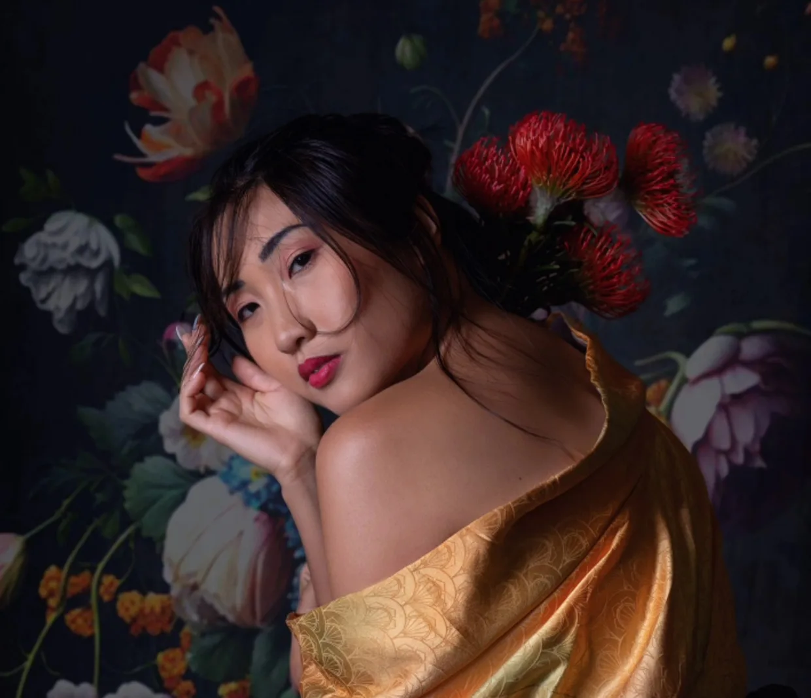
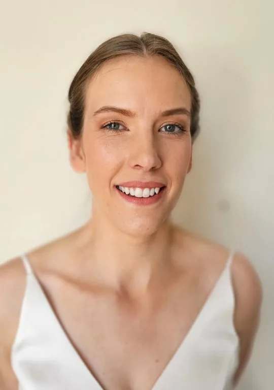
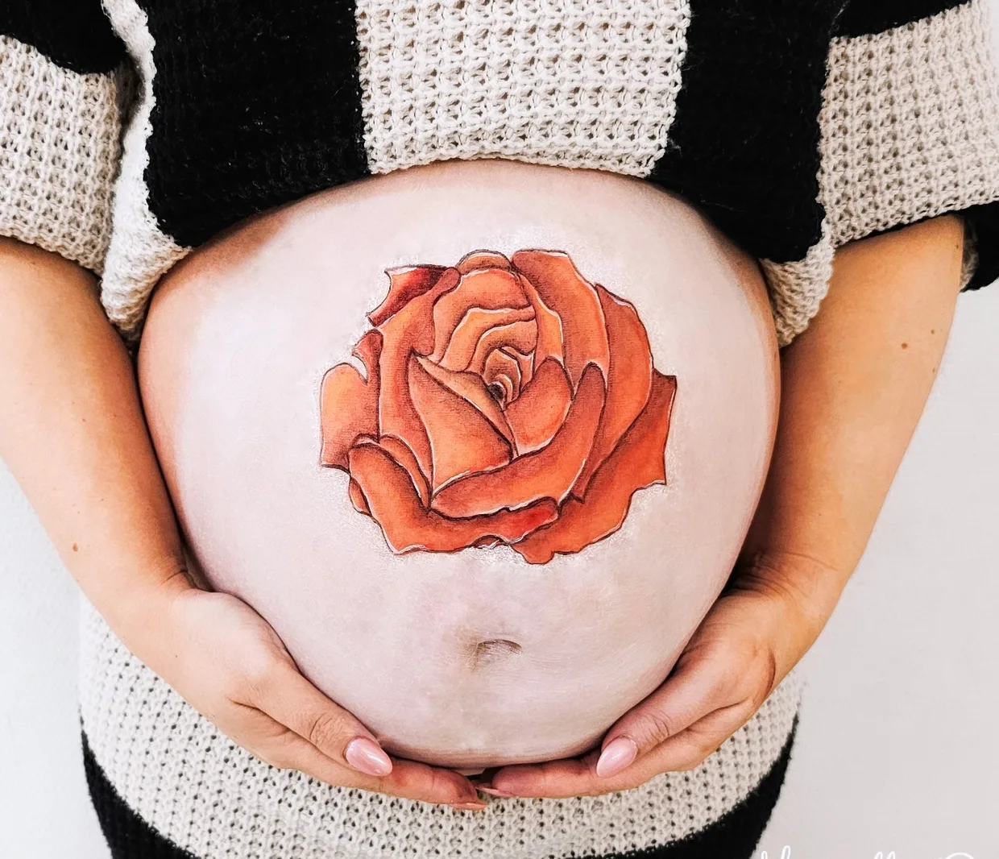
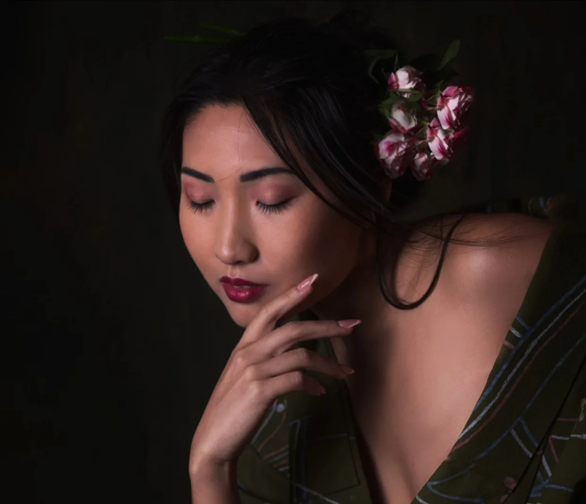

Natural bridal
Je eigen gezicht, alleen een stralende versie ervan.
- Proefmoment in de studio, 1 tot 2 uur
- Advies voor de verzorging van je huid
- Make-up op je trouwdag, op locatie
Ik ben Lieze Messiaen. Al meer dan vijftien jaar maak ik bruiden, mama's in spe en acteurs klaar voor de camera. Jij zegt wat je mooi vindt, ik zorg dat het klopt. Van het proefmoment in de studio tot de laatste foto van de avond.

 special effects
special effects
Na Kunstwetenschappen aan de Universiteit Gent koos ik toch voor make-up. Met mijn diploma Allround Make-up Artist doe ik vandaag alles van een zachte bruidslook tot special effects en hairstyling. Voor bijscholingen trok ik naar Frankrijk, Engeland en Los Angeles. Wat ik daar leerde, gebruik ik elke dag in de studio.
Elk arrangement begint met een proefmoment in de studio in Marke. Op je trouwdag kom ik naar jou, zodat jij in alle rust kan genieten van de ochtend.

Je eigen gezicht, alleen een stralende versie ervan.
Met browstyling, highlight en shaping op maat van je gezicht.
Jij brengt je inspiratie mee, samen maken we er jouw kapsel van.
Je volledige look in één afspraak, van haarlok tot wimper.


Je buik groeit maar één keer zo. Ik maak je klaar met een naturelle of glam make-up en als je wil ook je haar. In de studio of op de locatie van je fotograaf, we bekijken samen wat past.
Make-up en hairstyling voor je shoot, naturel of glam.
Je buik als kunstwerk, met veilige, huidvriendelijke verf en een mini-shoot met enkele digitale foto's.
Fotoshoots, catwalks, videoclips en film. Een greep uit de looks die ik de voorbije jaren mocht maken.



35 reviews op Google, van bruiden en vaste klanten.
"Als bruid in spe voelde ik me meteen op mijn gemak bij Lieze. Ze vroeg en volgde mijn wensen voor haar en make-up en voegde er haar eigen touch aan toe met een prachtig resultaat! Vroeg in de ochtend van ons huwelijk stond ze bij ons aan de deur."
"Lieze luisterde super goed naar mijn wensen. Ze deed mijn make-up en haar voor mijn huwelijk. Het bleef de hele dag heel mooi zitten en ik voelde me een prinses."
"Lieze verzorgde al enkele keren mijn haar en make-up. Ze komt haar afspraken na. Ze houdt rekening met de wensen en geeft professioneel advies omtrent passende make-up en kapsel."
Ik werk alleen op afspraak. Stuur me een mailtje of een bericht op Instagram, dan laat ik snel weten of ik vrij ben.
Ik maakte deze demo voor jullie om te tonen wat er kan. Na een kort gesprek maak ik er iets veel persoonlijkers van, helemaal naar jullie wens.
Vrijblijvend. Ik kom langs of we bellen.
Op maat, op jullie eigen domein.
Geen voorschot. Jullie betalen pas als alles klaar is.
Hosting, domeinnaam en kleine wijzigingen, zoals nieuwe openingsuren.
Omdat een voorbeeld meer zegt dan een mail. Zo zien jullie meteen wat er kan, en het kost jullie niets.
Nee. Het gesprek is vrijblijvend. Vinden jullie het niks, dan is het daarmee gedaan.
Na ons gesprek staat jullie site binnen 10 tot 14 dagen online.
Zeker. Jullie domeinnaam kan gewoon blijven, de nieuwe site komt in de plaats van de oude.
Nee, dat doe ik op basis van ons gesprek. Eigen foto's zijn mooi meegenomen, maar niet nodig om te starten.